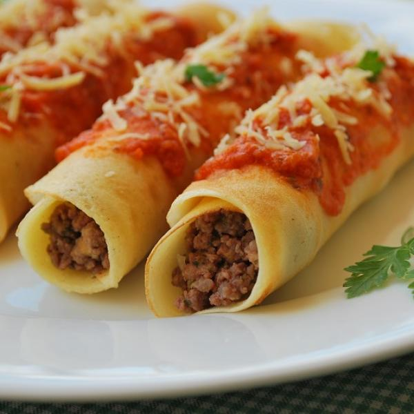

Pancake

The pancake in Brazil is kinda different. There, the pancake is salty
Like lasanha, the brazzilians eat pancakes with some rice and sometimes with beans.
List of ingredients
pasta
1 and 1/2 cup (tea) wheat flour
1 cup of milk (tea)
2 eggs
4 tablespoons oil
Salt
Filling
300g minced meat
2 tablespoons chopped or grated onion
1/2 cuted tomato into cubes
1/2 can of tomato paste
1 box of cream
Salt
400g sliced mozzarella grated
grated cheese
Step to step to make good pancakes for your family
Pasta
- Mix the eggs, milk, oil in a blender and add the wheat flour little bt little;
- After adding all the wheat flour, add salt;
- Mix the dough until you get a creamy consistency;
- Witch a paper towel, spread oil all over the skillet and pour a ladle of dough;
- Make circular movements so that the dough spreads throughout the skillet;
- Wait until the dough releases from the bottom and turn it to fry on the other side.
Montage
- Stuff the pancake wih a slice of mozzarella, a portion of meat and roll it up;
- Do this process with all the pancakes you made;
- Pour a little broth into the bottom of a refractory, to grease;
- Place the ready-made pancakes in the refractory and pour the rest of the sauce over them;
- Sprinkle grated cheese over the pancakes;
- Bake in the oven over medium heat for 20 minutes or until the cheese is melted.